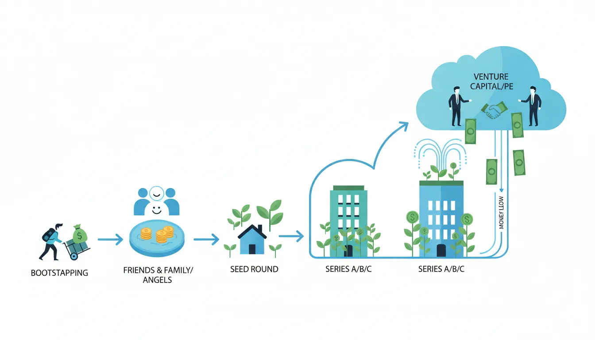
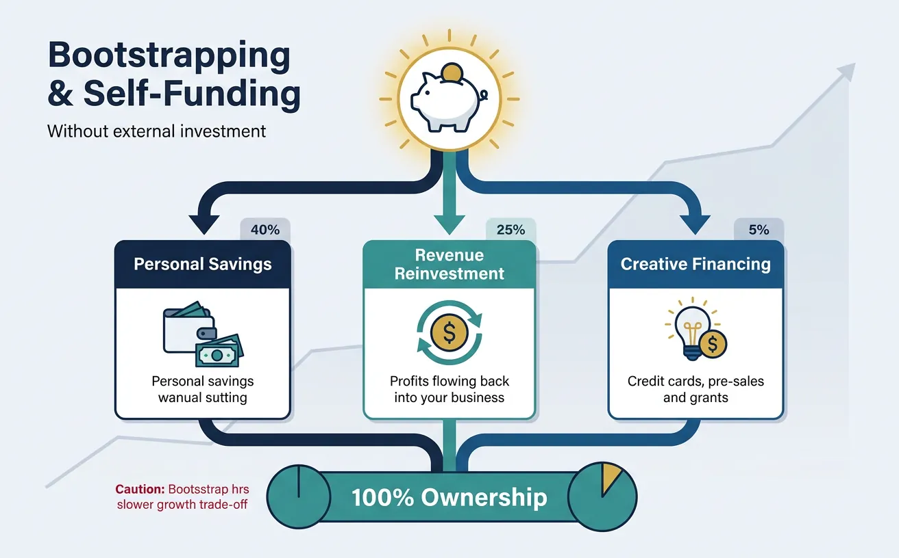
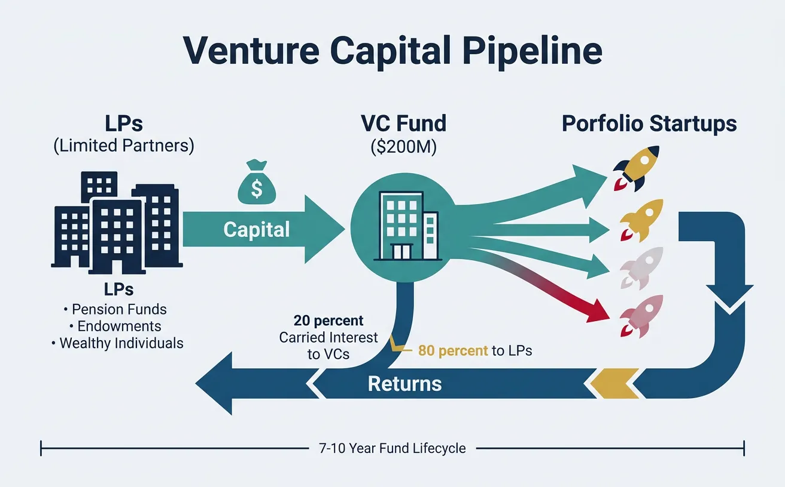
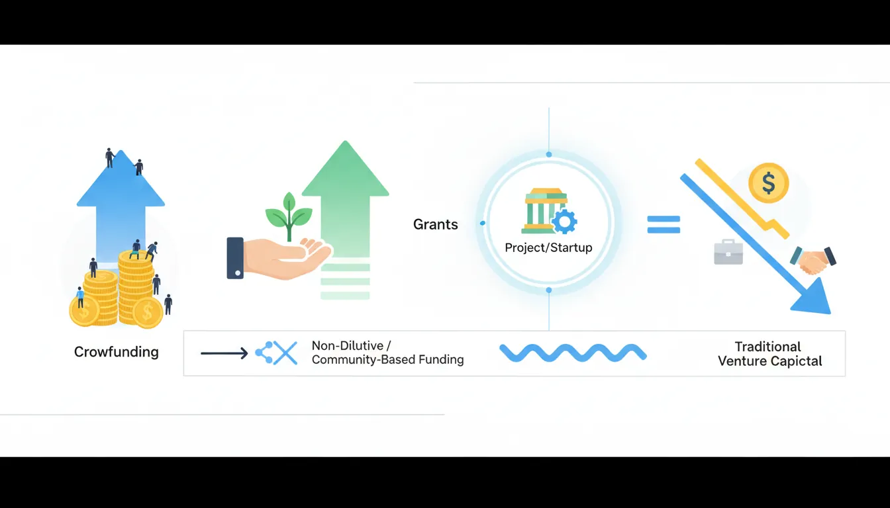
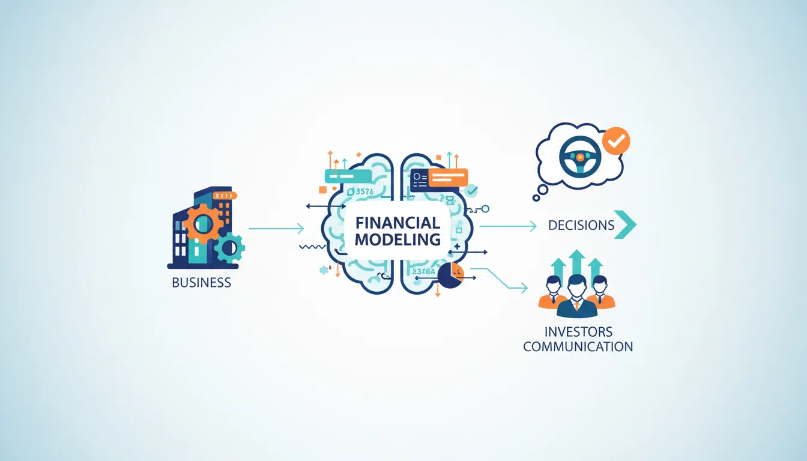

1. Introduction
Funding is the fuel that powers startup growth. Whether you're a first-time founder with a brilliant idea or an experienced professional venturing into entrepreneurship, understanding how money flows into startups is one of the most important skills you'll develop. This guide covers every funding option from bootstrapping to venture capital, plus the financial modeling skills you need to manage your company's finances effectively.

If terms like "valuation," "dilution," "cap table," or "term sheet" feel unfamiliar, don't worry—that's exactly why this guide exists. Here's a quick glossary of the most essential terms you'll encounter:
- Equity: Ownership in a company. If you own 50% equity, you own half the company.
- Valuation: What your company is worth. A $5M valuation means the whole company is valued at $5 million.
- Dilution: When your ownership percentage decreases because new shares are created (e.g., for investors). You own less of a bigger pie.
- Cap Table: A spreadsheet showing who owns what percentage of the company.
- Term Sheet: A document outlining the key deal terms when an investor wants to put money into your startup.
- Runway: How many months your startup can survive before running out of money.
- ARR / MRR: Annual/Monthly Recurring Revenue—the predictable income your business generates.
- SAFE: Simple Agreement for Future Equity—a popular, simple document for angel investments.
Complete Startup Journey
Ideation & Opportunity Recognition
Problem discovery, market gaps, idea generation frameworksIdea Validation & MVP Prototyping
Customer discovery, landing pages, prototype testingBusiness Models & Canvas
BMC, lean canvas, revenue models, value propositionsLean Startup Methodology
Build-measure-learn, pivoting, validated learningFundraising & Financial Modeling
VC, angels, SAFE notes, cap tables, financial projectionsBuilding Your Founding Team
Co-founder selection, equity splits, team dynamicsHiring & Company Culture
Recruiting, culture building, OKRs, team scalingScaling Operations & Growth Hacking
Growth loops, viral mechanics, operational scalingMarketing Campaigns & Digital Growth
CAC/LTV, digital marketing, positioning, channelsLegal, Financial & Risk Foundations
Entity structure, IP, compliance, burn rate managementData-Driven Decision Making
SaaS metrics, NPS, analytics dashboards, A/B testingExit Strategies & Investor Pitches
Valuations, pitch decks, M&A, IPO preparationStartup Ecosystem & Networking
Accelerators, mentors, communities, ecosystem mappingInnovation, Technology & Future Trends
Emerging tech, AI/ML, deep tech, future marketsCapstone Projects & Portfolio
Comprehensive startup plan, portfolio presentation2. Bootstrapping & Founder Financing
Bootstrapping means building your company without external investment, using personal savings, revenue, and creative financing. It's how many of the world's most successful companies started—Mailchimp grew to $12B without ever taking VC money.

The term comes from the phrase "pulling yourself up by your bootstraps"—doing something entirely on your own without outside help. In the startup world, it means funding your business yourself, typically through personal savings, credit cards, or the revenue your business generates. You don't give away any ownership (equity) to investors—you keep 100% control. The trade-off is that growth may be slower, but you answer to no one but yourself and your customers.
Think of bootstrapping like hiking with only what you can carry. Every dollar must earn its place. This constraint breeds creativity, forces focus on revenue, and keeps founders in control. You own 100% of nothing if you fail, but 100% of something real if you succeed.
Sources of Bootstrap Capital
| Source | Typical Amount | Pros | Cons |
|---|---|---|---|
| Personal Savings | $5K - $100K | Immediate access, no obligations | Personal financial risk |
| Friends & Family | $10K - $250K | Flexible terms, trust-based | Relationship risk |
| Credit Cards | $5K - $50K | Quick access, no equity dilution | High interest rates (15-25%) |
| Revenue (Pre-sales) | Variable | Validates demand, funds growth | Must deliver on promises |
| Side Consulting | $2K - $15K/month | Builds skills, network, runway | Divides focus and time |
The Bootstrap Decision Framework
Should You Bootstrap?
┌─────────────────────────────────────────────────────────────┐
│ BOOTSTRAP IF: │ RAISE IF: │
├─────────────────────────────────────────────────────────────┤
│ • B2B software with quick sales │ • Winner-take-all │
│ cycles (SMB SaaS) │ market dynamics │
│ • Service business scalable via │ • Capital-intensive │
│ productization │ hardware/biotech │
│ • Niche market with clear path │ • Network effects │
│ to $1-10M ARR │ require fast scale │
│ • Founders want lifestyle business │ • Competitors are │
│ or long-term control │ well-funded │
│ • Can reach profitability in │ • Time-to-market is │
│ 12-18 months │ critical advantage │
└─────────────────────────────────────────────────────────────┘
Bootstrap Tactics That Work
1. Charge from Day One: Don't wait for the "perfect" product. Basecamp charged $12/month before they had all features. Early revenue validates and funds development.
2. Annual Plans Upfront: Offer 2 months free for annual payment. A $99/month product becomes $990 upfront cash—10x your immediate runway.
3. The Consulting-to-Product Bridge: Start as a consultancy, identify repeated problems, productize the solution. Many SaaS companies (Shopify, Atlassian) started this way.
Case Study: Mailchimp's Bootstrap Journey
The Story: Ben Chestnut and Dan Kurzius started Mailchimp in 2001 as a side project while running a web design agency. They never took venture capital.
Key Tactics:
- Funded development through agency revenue for 8 years
- Launched freemium model in 2009 (grew from 85K to 450K users in one year)
- Focused on profitability, not growth at all costs
- Reinvested profits into product development
Result: Acquired by Intuit for $12B in 2021—founders kept majority ownership.
3. Angel Investors
Angel investors are wealthy individuals who invest their own money in early-stage startups, typically writing checks from $25K to $500K. They're often entrepreneurs themselves and provide mentorship alongside capital.
Imagine you've built a prototype and have some early users, but you need $200K to hire engineers and grow. You can't get a traditional bank loan (banks don't lend to unproven startups). Instead, you pitch a wealthy individual—an "angel"—who gives you $200K in exchange for, say, 10% ownership of your company. They're "betting" on you.
Why do angels invest? They hope your company becomes worth $50M+ someday, making their 10% worth $5M—a 25x return on their $200K. Most angel investments fail, so they spread bets across 10-20 startups, hoping 1-2 become big winners.
What do angels expect? Regular updates (monthly email), honesty about challenges, a seat at the table for major decisions, and eventually a "return" when the company is sold or goes public (typically 5-10 years).
Finding & Pitching Angels
Angels invest in people first, ideas second. They're betting on founders they believe can navigate uncertainty and execute a vision.
Average angel sees 100 deals → Takes meetings on 20 → Does deep diligence on 5 → Invests in 1-2. Your goal: make it impossible for them NOT to take the meeting.
Where to Find Angels
| Source | Examples | Best For |
|---|---|---|
| Angel Networks | AngelList, Gust, Angel Capital Association | Broad exposure to many investors |
| Angel Groups | Tech Coast Angels, Golden Seeds, Band of Angels | Structured process, due diligence support |
| Warm Introductions | LinkedIn connections, accelerator alumni, advisors | Highest conversion rate (10x cold outreach) |
| Industry Events | Demo days, pitch competitions, conferences | Founders with presentation skills |
| Social Platforms | Twitter/X, LinkedIn content, podcasts | Building public profile over time |
The Perfect Angel Pitch (10 Minutes)
Angel Pitch Structure:
┌─────────────────────────────────────────────────────────────┐
│ HOOK (30 sec) │ Compelling one-liner + traction │
│ PROBLEM (1 min) │ Pain point with specific example │
│ SOLUTION (2 min) │ Demo or clear explanation │
│ TRACTION (2 min) │ Revenue, users, growth metrics │
│ BUSINESS MODEL (1 min)│ How you make money, unit economics│
│ MARKET (1 min) │ TAM/SAM/SOM with bottoms-up calc │
│ TEAM (1 min) │ Why you're uniquely qualified │
│ ASK (30 sec) │ Specific amount, use of funds │
│ CLOSE (1 min) │ Why now, call to action │
└─────────────────────────────────────────────────────────────┘
Time for Q&A: 5-10 minutes
Think of your pitch like telling a story to a friend about a problem you want to solve:
- Hook: Your opening line—something that makes the listener lean in. Example: "Last year, 3 million small businesses closed because they couldn't manage their cash flow. We're changing that."
- Problem: Describe the specific pain point you've observed. Make it personal—use a real customer story if possible.
- Solution: What you've built and how it solves the problem. Show a demo if you can—seeing is believing.
- Traction: Proof that real people want what you're building. Revenue, users, waitlist signups, or partnerships.
- Business Model: How you make money. Keep it simple: "We charge $X per month" or "We take a Y% commission."
- Market: How big is the opportunity? Use TAM/SAM/SOM (Total Addressable Market → Serviceable → Obtainable).
- Team: Why are YOU the right people to solve this? Highlight relevant experience and unique advantages.
- The Ask: Be specific. "We're raising $300K to hire 2 engineers and reach 1,000 paying customers by December."
- Close: Create urgency. Why should they invest NOW rather than wait 6 months?
Pro Tips: What Angels Actually Look For
1. Coachability: Angels want founders who listen, adapt, and learn—not those who think they know everything.
2. Passion with Data: Enthusiasm is great, but back it up with numbers. "I'm passionate about this" is weak. "I've talked to 100 potential customers and 40 said they'd pay" is strong.
3. Honesty about Risks: Every startup has risks. Acknowledging them shows maturity. "Our biggest risk is customer acquisition cost—here's how we're addressing it."
4. Clear Use of Funds: Don't say "we'll use it for growth." Say "$100K for engineering (2 hires), $50K for marketing (first 6 months of paid acquisition), $50K for 8-month runway."
5. Why You? What's your unfair advantage? Industry experience, technical skills, existing relationships, or unique insight that competitors don't have.
Angel Pitch Builder Tool
Use this interactive tool to draft your perfect 10-minute angel pitch. Fill in each section, then download your pitch outline as a Word document, Excel spreadsheet, PDF, or a ready-to-present PowerPoint deck. Your draft is automatically saved as you type.
Draft your 10-minute angel pitch section by section. Download as Word, Excel, PDF, or a presentation-ready PPTX deck.
All data stays in your browser. Nothing is sent to or stored on any server.
Angel Terms & Equity
Angel rounds typically use one of two instruments: SAFEs (Simple Agreement for Future Equity) or Convertible Notes. Both delay valuation until a priced round.
At the angel stage, your company is so early that it's nearly impossible to determine a fair price. How much is a company worth when it has a prototype and 50 users? Nobody really knows. SAFEs and Convertible Notes solve this by saying: "Let's not argue about price now. You give me money today, and when a bigger, smarter investor (like a VC) sets a real price in the future, your investment converts to shares at a discount—rewarding you for taking the early risk." This is why you'll see terms like "valuation cap" (a maximum price the early investor pays) and "discount" (a percentage off the future price).
| Instrument | How It Works | Founder Friendly? | Investor Preference |
|---|---|---|---|
| SAFE (Post-Money) | Converts to equity at next priced round with cap/discount | ⚠️ Clear dilution math | Yes (YC standard) |
| SAFE (Pre-Money) | Original YC SAFE, less clear dilution | ✅ Better for founders | Less common now |
| Convertible Note | Debt that converts, with interest and maturity date | ⚠️ Interest accrues | Yes (more protection) |
| Priced Equity Round | Set valuation, immediate share issuance | ❌ Legal fees ($10-25K) | Rare at angel stage |
Key Terms to Understand
Valuation Cap: Maximum valuation at which the investment converts. If the cap is $5M and Series A is $10M, angel investors get shares at $5M price (2x better).
Discount: Percentage discount to next round price (typically 15-25%). If Series A is $10/share with 20% discount, angels pay $8/share.
Pro-Rata Rights: Right to maintain ownership percentage in future rounds. Important for investors who want to double down on winners.
Exercise: SAFE Conversion Math
Scenario: You raise $500K on a post-money SAFE with $5M cap. Later, you raise Series A at $15M pre-money valuation.
Calculate:
- What percentage do SAFE holders own immediately after SAFE?
- At what effective valuation do they convert?
- If Series A investors get 20%, what's total dilution?
Answers:
- $500K / $5M = 10% ownership post-SAFE
- They convert at $5M cap (not $15M), getting 3x value
- Post-Series A: SAFE holders ~8%, Series A 20%, Founders 72%
SAFE Conversion Calculator
Model how a SAFE note converts at the next priced round. See post-conversion ownership.
All data stays in your browser. Nothing is sent to or stored on any server.
4. Venture Capital
Venture capital (VC) is institutional money managed by professional investors. VCs raise funds from Limited Partners (LPs)—pension funds, endowments, wealthy individuals—and invest in high-growth startups seeking 10-100x returns.

flowchart LR
PRE["Pre-Seed\n$50K-$500K\nFriends & Family"] --> SEED["Seed\n$500K-$2M\nAngels, Micro VCs"]
SEED --> A["Series A\n$2M-$15M\nVC Firms"]
A --> B["Series B\n$15M-$50M\nGrowth VCs"]
B --> C["Series C+\n$50M+\nLate-Stage VCs"]
C --> EXIT{"Exit"}
EXIT -->|"IPO"| PUBLIC["Public\nMarket"]
EXIT -->|"M&A"| ACQ["Acquisition"]
Think of a VC fund like a chain:
- LPs give money to VCs: Pension funds, university endowments, and wealthy individuals give, say, $200M to a VC firm to invest.
- VCs invest in startups: The VC firm spreads that $200M across 20-30 startups, investing $2M-$20M in each.
- Startups grow (hopefully): Over 7-10 years, some fail (losing the investment), some do okay, and hopefully 1-2 become massive.
- Returns flow back: When startups are sold or go public, profits flow back: VC firm takes ~20% (called "carried interest"), LPs get the rest.
Key insight: VCs need 10x+ returns on winners because most investments fail. That's why they're looking for potential "unicorns" ($1B+ companies), not steady small businesses.
A typical VC fund: 50% of investments return 0, 30% return 1-3x, 15% return 3-10x, 5% return 10-100x. That 5% must carry the entire fund. VCs aren't looking for good businesses—they're looking for potential category winners.
Funding Stages Explained
Before diving into the stages, here's what each column means:
- Typical Amount: How much money startups usually raise at this stage. Ranges vary widely by industry and geography.
- Valuation Range: What the company is considered to be "worth" at this stage. Higher valuation = you give away less ownership for the same money.
- What You Need: The milestones investors expect you to have achieved before they'll invest at this stage.
- Dilution: The percentage of ownership you give away to investors in exchange for their money. If you give 20% dilution, investors get 20% of the company.
- PMF (Product-Market Fit): When your product clearly satisfies a real demand — customers are buying, using, and recommending it without heavy convincing.
- Unit Economics: Whether you make or lose money on each individual customer. If it costs $100 to acquire a customer who pays you $300 over their lifetime, your unit economics are healthy.
| Stage | Typical Amount | Valuation Range | What You Need | Dilution |
|---|---|---|---|---|
| Pre-Seed | $100K - $1M | $1M - $5M | Idea, team, early prototype | 10-20% |
| Seed | $1M - $4M | $5M - $15M | MVP, early traction, PMF signals | 15-25% |
| Series A | $5M - $20M | $15M - $50M | Product-market fit, repeatable sales | 20-30% |
| Series B | $20M - $60M | $50M - $200M | Scaling playbook, unit economics | 15-25% |
| Series C+ | $50M - $200M+ | $200M - $1B+ | Market leadership, path to IPO/exit | 10-20% |
- Pre-Seed — You have an idea and maybe a rough prototype. You're raising money from friends, family, or very early angels to build a proper first version. Example: Airbnb's founders maxed out credit cards and sold cereal boxes before raising a $20K pre-seed check from Y Combinator in 2009.
- Seed — You've built a Minimum Viable Product (MVP) and have early signs that people want it — maybe a few hundred users, some paying customers, or a promising waitlist. Investors look for "PMF signals" — hints that you're on the path to product-market fit. Example: Stripe's seed round was $2M in 2011 when they had a working payment API and a handful of developers using it.
- Series A — You've proven product-market fit: customers are buying, staying, and telling others. Now you need money to scale — hire salespeople, expand marketing, build infrastructure. Investors expect repeatable, predictable revenue growth. Example: Slack raised $42.75M Series A in 2014 after explosive organic growth to 500K+ daily active users.
- Series B — You have a working sales and marketing machine (a "scaling playbook") and strong unit economics (each customer is profitable). This round funds aggressive expansion — new markets, geographies, or product lines. Example: DoorDash raised a $127M Series B in 2018 to expand from a few US cities to nationwide coverage.
- Series C+ — You're a market leader preparing for an IPO (going public on the stock market) or a major acquisition. These rounds fund international expansion, acquisitions of competitors, or building massive infrastructure. Example: SpaceX raised $1B+ Series C rounds to fund rocket development and satellite constellation deployment.
Understanding Dilution at Each Stage
Why does dilution vary by stage? Earlier stages have higher dilution because investors take more risk — your company is less proven. Here's a concrete example of what dilution looks like with real numbers:
Pre-Seed (15% dilution): You raise $150K at a $1M valuation. Investor gets 15%. You keep 85%. The company is just an idea — high risk for the investor.
Seed (20% dilution): You raise $2M at a $10M valuation. Investor gets 20%. You now own 68% (85% × 80%). You have an MVP and some users — still risky but less so.
Series A (25% dilution): You raise $10M at a $40M valuation. Investor gets 25%. You now own 51% (68% × 75%). You have real revenue and growth — investor risk is much lower.
The key insight: After 3 rounds, you went from 100% to 51% ownership. But the company went from $0 to a $40M valuation — your 51% is worth $20.4M. Dilution is not a loss; it's the price of growth.
Equity Deep Dive: What You're Actually Giving Away
Before we discuss term sheets, it's critical to understand equity — the most important currency in the startup world. When someone says "I'll give you 10% equity," they're offering 10% ownership of the company. But not all equity is created equal.
Startups issue two types of ownership:
- Common Shares: What founders and employees get. These are basic ownership — you share in profits and sale proceeds, but you're last in line if the company is sold or shut down. Think of it like economy class on a plane: you get there, but without the perks.
- Preferred Shares: What investors get. These come with special rights: they get paid back first in a sale ("liquidation preference"), they may get guaranteed dividends, and they have anti-dilution protection. Think of it like business class: same destination, but with significant perks and protections.
Why does this matter? If your company sells for $10M, preferred shareholders (investors) get their money back FIRST. Only after they're satisfied do common shareholders (founders, employees) get paid. This is why understanding the fine print is crucial — owning 50% in common shares isn't the same as owning 50% in preferred shares.
Real-World Example: How Equity Translates to Money
Scenario: You own 40% of a company. An acquirer offers to buy the company for $20M.
Naive calculation: 40% × $20M = $8M for you. Simple, right?
Reality with preferred shares:
- Investors hold preferred shares and invested $5M with 1x liquidation preference
- Investors get $5M off the top (their money back first)
- Remaining: $20M - $5M = $15M to split by ownership percentage
- Your share: 40% × $15M = $6M (not $8M)
- Investor share: $5M preference + their equity % of $15M
Lesson: Always model your payout under different exit scenarios, accounting for preferences. This is why understanding term sheets matters enormously.
Understanding Term Sheets
A term sheet is a non-binding document outlining the key terms of an investment. It becomes the blueprint for legal documents. Understanding terms is crucial—bad terms can haunt you for years.
Think of it like a letter of intent when buying a house. Before the lawyers draft 50-page contracts, the buyer and seller agree on the big stuff: price, conditions, and timeline. A term sheet does the same for investment—it's usually 3-8 pages covering two things:
1. Economic terms: How much money, at what price (valuation), and who gets paid first if the company is sold.
2. Control terms: Who gets a say in major decisions (board seats, voting rights, veto powers).
It's not legally binding—either side can walk away. But once signed, it signals serious intent and kicks off formal legal work ("due diligence").
Term Sheet Anatomy:
ECONOMIC TERMS (Affects $$$) CONTROL TERMS (Affects Power)
├── Valuation (Pre/Post-money) ├── Board Composition
├── Investment Amount ├── Voting Rights
├── Option Pool Size ├── Protective Provisions
├── Liquidation Preference ├── Information Rights
├── Anti-dilution Protection ├── Drag-Along Rights
├── Dividends └── Founder Vesting
└── Pro-rata Rights
Critical Terms Decoded
"Liquidation" doesn't mean bankruptcy — it means any event where the company's assets are converted to cash and distributed. This includes being acquired (sold to another company), going public (IPO), or yes, shutting down. "Preference" means investors get paid before founders and employees.
Why does this exist? Investors take a big risk putting money into your startup. Liquidation preference is their safety net — it guarantees they at least get their money back (usually) before anyone else gets paid. Think of it like a seniority system: investors are first in line at the checkout.
The two main types:
- 1x Non-Participating (Standard & Fair): Investor chooses the better of two options: (A) get their original investment back, OR (B) convert to common shares and take their ownership percentage of the sale price. They pick whichever is higher, but NOT both.
- 1x Participating ("Double-Dip" — Investor-Friendly): Investor gets their original investment back AND ALSO gets their ownership percentage of what's left. This is significantly more expensive for founders.
Liquidation Preference Example
Scenario: VC invests $10M for 20% at $50M valuation. Company sells for $30M.
1x Non-Participating:
- Option A: Take $10M preference → Get $10M
- Option B: Convert to 20% equity → Get $6M (20% × $30M)
- VC chooses Option A: Gets $10M, Founders get $20M
1x Participating:
- VC gets $10M preference PLUS 20% of remaining $20M
- VC total: $10M + $4M = $14M
- Founders get: $16M
Lesson: Participating preferred can significantly reduce founder returns in modest exits.
Imagine an investor buys shares at $10 each. Later, the company struggles and raises new money at $5 per share (a "down round" — meaning the company is valued lower than before). The original investor's shares are now worth less than they paid.
Anti-dilution protection compensates early investors by giving them extra shares to offset the price drop:
- Broad-Based Weighted Average (Standard): Adjusts the price using a formula that considers how many new cheap shares were issued. It's a fair compromise — the investor gets some protection, but it doesn't punish founders too harshly. This is the standard investors use in 95% of deals.
- Full Ratchet (Harsh): Reprices ALL of the investor's previous shares to the new, lower price — as if they'd bought at $5, not $10. This can be devastating for founders because it massively increases the investor's ownership. Avoid this unless you have no other options.
A company's Board of Directors makes major decisions: approving budgets, hiring/firing the CEO, authorizing new funding rounds, and deciding whether to sell the company. Board "composition" is who gets a seat.
Typical progression:
- Pre-Seed/Seed: 2 founders + 1 investor = 3 seats. Founders control the board.
- Series A: 2 founders + 2 investors + 1 independent = 5 seats. Power is balanced, with an independent tiebreaker.
- Series B+: 1-2 founders + 3 investors + 1-2 independents. Investors increasingly influence decisions.
Startup Valuation Methods
Early-stage valuation is more art than science. Multiple methods exist, and experienced investors use them as sanity checks rather than precise calculations.
This is one of the most common questions new founders ask — and it's a great one. Unlike a house (where you can look at comparable sales) or a stock (where you can analyze earnings), early-stage startups have no revenue, no profits, and often no product. So how do investors decide what it's "worth"?
The honest answer: it's largely negotiation. Investors use the methods below as starting points, but the final valuation depends on supply and demand — how many investors want in, how much money you need, how much traction you have, and what comparable startups raised recently. Two identical companies could get very different valuations simply because one had more investor interest.
| Method | How It Works | Best For |
|---|---|---|
| Comparable Companies | Multiple of revenue/users based on similar companies | Post-revenue startups |
| Scorecard Method | Adjust average valuation by team, market, product scores | Pre-revenue, angel stage |
| Venture Capital Method | Work backward from target exit to current value | VCs calculating expected returns |
| Berkus Method | Add $500K for each milestone (idea, team, prototype, sales, rollout) | Very early stage, quick estimate |
| DCF (Discounted Cash Flow) | Project future cash flows, discount to present value | Later stage with predictable revenue |
VC Method Example
Venture Capital Valuation Method:
Step 1: Estimate exit value
Expected exit in 5 years: $100M (based on comps)
Step 2: Determine required return
VC target: 10x return (typical for Series A)
Step 3: Calculate post-money valuation
Post-money = Exit Value ÷ Target Multiple
Post-money = $100M ÷ 10 = $10M
Step 4: Account for dilution
Assume 50% dilution in future rounds
Adjusted post-money = $10M × (1 - 50%) = $5M
Step 5: Determine investment and ownership
VC invests $1M at $5M post-money = 20% ownership
Pre-money valuation = $5M - $1M = $4M
Understanding Dilution
Every time you raise money or grant equity, existing shareholders own a smaller percentage of the company. This is dilution—it's not bad if the pie grows faster than your slice shrinks.
When your company needs investment, you create new shares and sell them to investors. Because there are now more total shares, your existing shares represent a smaller percentage of the company. This is dilution.
Step-by-step example:
- You start a company with 1,000,000 shares. You own all 1,000,000 = 100%.
- An investor gives you $500K. You create 250,000 new shares for them.
- Now there are 1,250,000 total shares. You still have 1,000,000.
- Your ownership: 1,000,000 ÷ 1,250,000 = 80%. The investor owns 20%.
- Your 80% of a company worth $2.5M post-money = $2M. Before, you had 100% of something worth much less.
The critical question isn't "what percentage do I own?" — it's "what is my percentage WORTH?"
Imagine a pizza. You own 8 of 8 slices (100%). You bring in a partner who contributes and gets 2 slices—now there are 10 slices, you have 8 (80%). But if the partner helps grow the pizza from $10 to $100, your 80% is worth $80, not $10. Would you rather have 100% of $10 or 80% of $100?
An option pool (also called Employee Stock Option Pool or ESOP) is a percentage of shares set aside for future employees. Why? To attract talented engineers, salespeople, and executives, startups offer stock options (the right to buy shares at a low price) as part of compensation.
Why does this dilute founders? When you create a 10% option pool, you're essentially creating new shares that reduce everyone's ownership by 10%. Investors typically require you to create (or expand) the option pool before their investment so the dilution comes from your slice, not theirs.
Real-world example: You own 100%. Investor says: "Before I invest, set aside 10% for an employee option pool." Now you own 90%. Then the investor takes 20%. You end up with 72% (90% × 80%). The option pool dilutes you twice — once when created, and again proportionally with each round.
Typical Founder Dilution Path:
Stage Raise Dilution Cumulative Founder %
─────────────────────────────────────────────────────────────────
Founding - - - 100%
Option Pool - 10% 10% 90%
Seed $1M 15% 23.5% 76.5%
Option Pool - 5% 27.3% 72.7%
Series A $5M 20% 41.8% 58.2%
Option Pool - 5% 44.7% 55.3%
Series B $20M 20% 55.8% 44.2%
─────────────────────────────────────────────────────────────────
By Series B, founders typically own 40-50% combined
Real-World Dilution: Mark Zuckerberg's Facebook Journey
Mark Zuckerberg founded Facebook in 2004 and owned nearly 100% at the start. Through multiple rounds of fundraising:
- Angel round (2004): Peter Thiel invested $500K for ~10%. Zuckerberg diluted to ~90%.
- Series A (2005): Accel Partners invested $12.7M. Zuckerberg diluted further.
- Series B-D (2006-2011): Microsoft, DST Global, Goldman Sachs invested hundreds of millions.
- IPO (2012): Zuckerberg owned approximately 28% of Facebook.
But here's the key: At IPO, Facebook was valued at $104 billion. Zuckerberg's 28% was worth $29 billion. He "lost" 72% of his ownership — but that remaining 28% made him one of the wealthiest people in the world.
Lesson: Dilution is a tool, not a threat. The goal is to own a meaningful percentage of something enormously valuable, not 100% of something small.
5. Crowdfunding & Grant Opportunities
Crowdfunding and grants offer non-dilutive or community-based funding alternatives. They're ideal for consumer products, creative projects, and companies that can't or don't want to pursue traditional VC.

Instead of getting a large check from one wealthy investor, crowdfunding lets you raise money from hundreds or thousands of ordinary people, typically through an online platform. Each person contributes a small amount ($10-$10,000), and in return they get something — a product, equity, or just a thank you.
"Non-dilutive" funding means you don't give away ownership. Rewards-based crowdfunding ("back us and we'll send you the product") and grants (free money from government programs) are non-dilutive — you keep 100% of your company.
Famous crowdfunding successes: Pebble Watch raised $10.3M on Kickstarter (2012), Oculus Rift raised $2.4M before Facebook acquired them for $2B, and Exploding Kittens raised $8.8M from 219K backers — the most-backed Kickstarter project ever at the time.
Types of Crowdfunding
| Type | Platform | What Backers Get | Best For |
|---|---|---|---|
| Rewards-Based | Kickstarter, Indiegogo | Product, perks, recognition | Consumer products, creative projects |
| Equity Crowdfunding | Wefunder, Republic, StartEngine | Equity shares | Startups with strong community |
| Debt Crowdfunding | Kiva, Funding Circle | Interest payments | Established businesses needing loans |
| Donation-Based | GoFundMe, Patreon | Goodwill, content access | Social causes, creators |
Grants for Startups
Grants are free money—no equity, no repayment. The catch: competitive applications, specific requirements, and often restricted use of funds. Think of grants like scholarships for your business — you apply, make a case for why you deserve funding, and if selected, receive money you never have to pay back. Some grants require you to report how you spent the money, and many are restricted to specific industries (biotech, clean energy, education tech).
| Grant Program | Amount | Focus | Requirements |
|---|---|---|---|
| SBIR/STTR (US) | $50K - $2M | R&D, technology innovation | US small business, tech focus |
| NSF I-Corps | $50K | Customer discovery for deep tech | University affiliation |
| Horizon Europe (EU) | €50K - €2.5M | Innovation and research | EU-based or collaboration |
| Innovate UK | £25K - £10M | Various innovation challenges | UK registered business |
| Google for Startups | Up to $200K cloud credits | Tech startups | Seed to Series A |
6. Financial Modeling Fundamentals
Financial modeling is the art of building a numerical story about your business. Good models help you make decisions, communicate with investors, and navigate uncertainty.

A financial model is simply a spreadsheet that answers: "If we do X, what happens to our money?"
For example: If you have 100 customers paying $50/month (that's $5,000/month revenue), and your costs are $8,000/month, you're losing $3,000/month. At that rate, with $36,000 in the bank, you have 12 months before running out of money (your "runway").
A financial model extends this logic over 12-36 months, incorporating assumptions about growth, churn (customers leaving), hiring, and expenses. It helps you answer critical questions:
- When will we break even (revenue ≥ expenses)?
- How much money do we need to raise?
- What happens if growth is 10% instead of 20%?
- When should we hire our next employee?
Models aren't about predicting the future—they're about understanding relationships. If revenue doubles, what happens to costs? When do you break even? How much runway does a funding round provide?
Revenue Projections
Build revenue models bottoms-up (unit-by-unit) rather than top-down (% of TAM). Investors immediately discount "we'll capture 1% of a $100B market."
The revenue models use industry-standard abbreviations. Here's what each one means:
- MRR (Monthly Recurring Revenue): Total predictable revenue per month from subscriptions. If 100 customers pay $50/month, MRR = $5,000.
- ARR (Annual Recurring Revenue): MRR × 12. The annualized version of your monthly revenue. ARR = $5,000 × 12 = $60,000.
- ARPU (Average Revenue Per User): Total revenue divided by number of users. If you earn $10,000/month from 200 users, ARPU = $50/month.
- Churn: The percentage of customers who cancel or leave each month. 5% monthly churn means you lose 5 out of every 100 customers per month.
- CAC (Customer Acquisition Cost): How much you spend to get one new customer. If you spend $10,000 on ads and get 50 customers, CAC = $200.
- COGS (Cost of Goods Sold): The direct costs to deliver your product. For SaaS: hosting, payment processing, support. For physical products: materials, shipping, manufacturing.
- GMV (Gross Merchandise Volume): The total value of goods sold through your platform (for marketplaces). If 100 items sell at $75 each, GMV = $7,500.
- AOV (Average Order Value): The average dollar amount per transaction. Total revenue ÷ number of orders.
- Take Rate: The percentage of each transaction that the marketplace keeps as revenue. Uber's take rate is ~25% — on a $40 ride, Uber keeps $10.
SaaS Revenue Model Structure
SaaS Revenue Building Blocks:
NEW MRR EXPANSION MRR CHURNED MRR
├── Leads (1000) ├── Upsells ├── Cancellations
├── × Conversion (5%) │ └── Existing × Rate ├── Downgrades
├── = New Customers (50) ├── Cross-sells └── MRR Lost
└── × ARPU ($100) └── Price increases
= $5,000 New MRR = $1,000 Expansion = $500 Churn
NET NEW MRR = $5,000 + $1,000 - $500 = $5,500
Monthly Growth Rate = Net New MRR ÷ Starting MRR
ARR = MRR × 12
Marketplace/E-commerce Model
GMV-Based Revenue Model:
Traffic × Conversion × AOV = GMV
GMV × Take Rate = Revenue
Example:
• Monthly visitors: 100,000
• Conversion rate: 3%
• Average order value: $75
• Take rate: 15%
GMV = 100,000 × 3% × $75 = $225,000
Revenue = $225,000 × 15% = $33,750/month
Expense Planning
Expenses fall into two categories: fixed (don't change with revenue) and variable (scale with activity). Understanding this mix determines your breakeven point and operating leverage.
| Expense Category | Fixed | Variable | Semi-Variable |
|---|---|---|---|
| Salaries | ✅ Base salaries | Commissions, bonuses | Overtime, contractors |
| Infrastructure | Office rent, base SaaS tools | Cloud computing (per usage) | Tiered software pricing |
| Marketing | Brand campaigns | ✅ Performance marketing (CAC) | Content, events |
| COGS | Platform fees | ✅ Payment processing, shipping | Support (scales with users) |
Startup Cost Structure by Stage
Typical Cost Allocation (% of Spend):
Pre-Seed Seed Series A Series B
─────────────────────────────────────────────────────────────
Product/Eng 60% 50% 40% 35%
Sales & Marketing 10% 20% 30% 35%
G&A (Admin) 20% 15% 15% 15%
Operations 10% 15% 15% 15%
─────────────────────────────────────────────────────────────
Key Insight: As you scale, % shifts from building to selling
Unit Economics in Models
Unit economics answer: "Do we make money on each customer?" If not, growth just accelerates losses.
Exercise: Build a Simple Financial Model
Create a 12-month projection for a SaaS startup with these assumptions:
- Month 1: 10 customers, $50 MRR each
- Monthly growth: 15% new customers
- Churn: 5% monthly
- CAC: $200 per customer
- Fixed costs: $5,000/month
Calculate for each month:
- Starting customers
- New customers (15% growth)
- Churned customers (5% of starting)
- Ending customers
- MRR (customers × $50)
- Acquisition cost (new customers × $200)
- Profit/Loss (MRR - Fixed - Acquisition)
Question: In which month do you break even?
Enter your SaaS assumptions below. The model auto-calculates 12-month projections including break-even analysis. Download as Word, Excel, or PDF.
All data stays in your browser. Nothing is sent to or stored on any server.
7. Fundraising Simulations
Preparing Pitch Decks
A pitch deck is your visual story—not a document to read, but a framework for conversation. The best decks follow a proven structure while standing out through clarity and insight.
The 12-Slide Pitch Deck
Standard VC Pitch Deck Structure:
1. TITLE │ Company name, tagline, your name
2. PROBLEM │ Pain point with specific examples
3. SOLUTION │ Your product/service clearly explained
4. DEMO/PRODUCT │ Screenshots, video, or live demo
5. TRACTION │ Users, revenue, growth charts
6. MARKET │ TAM/SAM/SOM with methodology
7. BUSINESS MODEL │ How you make money, pricing
8. COMPETITION │ Market map, your differentiation
9. TEAM │ Founders, key hires, advisors
10. FINANCIALS │ Revenue projections, key metrics
11. ASK │ How much, use of funds, timeline
12. CLOSING │ Vision, call to action, contact
Bonus slides for appendix:
• Detailed financials
• Customer testimonials
• Technical architecture
• Press/awards
• One idea per slide (less is more)
• Large fonts (30pt minimum)
• More images, fewer words
• Consistent branding
• Numbers should pop (make metrics unmissable)
VC Pitch Deck Builder 12 Slides + Appendix
Fill in each slide below to generate a complete investor pitch deck. Download as Word, Excel, PDF, or a ready-to-present PPTX slide deck.
All data stays in your browser. Nothing is sent to or stored on any server.
Slide 1 — Title
Slides 2-3 — Problem & Solution
Slides 4-5 — Product & Traction
Slides 6-7 — Market & Business Model
Slides 8-9 — Competition & Team
Slides 10-11 — Financials & The Ask
Slide 12 — Closing
Appendix (Optional Bonus Slides)
Negotiating Investor Terms
Negotiation is not adversarial—it's collaborative problem-solving. The best deals leave both sides feeling good about the partnership.
What's Negotiable vs. Standard
| Highly Negotiable | Somewhat Negotiable | Rarely Negotiable |
|---|---|---|
| Valuation | Board seats | 1x liquidation preference |
| Option pool size | Pro-rata rights | Standard protective provisions |
| Investment amount | Information rights | Anti-dilution (weighted avg) |
| Vesting schedule | Drag-along threshold | Investor approval for debt |
Negotiation Tactics
1. Create Competition: Multiple interested investors = leverage. Never lie, but do communicate interest levels. "We're in conversations with several funds and targeting a decision in 3 weeks."
2. Anchor High: If asked for valuation first, name a number 20-30% above your minimum. Leave room to "compromise."
3. Know Your Walk-Away: Decide in advance what terms are unacceptable. Be willing to walk away from bad deals.
4. Trade, Don't Concede: Every concession should come with a counter-ask. "We can accept that valuation if you increase the investment amount."
8. Cap Table Management
A capitalization table (cap table) records who owns what percentage of your company. It's a living document that changes with every equity transaction—funding, grants, exercises, transfers.
Imagine your company is a pie. A cap table is a simple list showing who owns which slice:
"Founder A: 50%, Founder B: 30%, Employee Options: 10%, Investor: 10%"
Every time you give away equity—to a co-founder, an employee, or an investor—you're cutting new slices. The cap table tracks all of this. It sounds simple, but it gets complicated fast with different share classes (common vs. preferred), vesting schedules (shares earned over time), and multiple funding rounds. That's why tools like Carta and Pulley exist—to keep this math clean and legally accurate.
Cap Table Basics
Simple Cap Table Example (Post-Seed):
Shareholder Shares % Class
─────────────────────────────────────────────────
Founder A 4,000,000 40.0% Common
Founder B 3,000,000 30.0% Common
Employee Pool 1,000,000 10.0% Common (Reserved)
Seed Investors 2,000,000 20.0% Series Seed Preferred
─────────────────────────────────────────────────
Total 10,000,000 100.0%
Key Calculations:
• Pre-money valuation: $4M (implied by round)
• Post-money valuation: $5M
• Seed investment: $1M
• Price per share: $0.50 ($1M ÷ 2M shares)
Cap Table Best Practices
• Update immediately after any equity event
• Use cap table software (Carta, Pulley, Captable.io) not spreadsheets
• Keep copies of all stock certificates and option grants
• Model scenarios before agreeing to terms
• Understand fully diluted vs. issued shares
Common Cap Table Mistakes
1. Giving Away Too Much Early: Advisors asking for 5%? That's $500K at $10M valuation for advice. Standard is 0.25-1%.
2. Messy Early Agreements: Handshake deals with co-founders or early employees create legal nightmares later.
3. Forgetting Option Pool Impact: A 15% option pool at Series A comes out of founder shares, not investor shares. Negotiate pool size carefully.
Exercise: Model Your Cap Table
Create a cap table for the following scenario:
- Two founders split equity 60/40
- Create 15% option pool
- Raise $500K seed at $4M post-money valuation
- Grant 2% to first employee
Questions:
- How many shares does each founder have?
- What % does each founder own after seed?
- How many shares remain in the option pool?
Model your cap table with founder splits, option pool, and an investment round. See post-round ownership and dilution. Download as Word, Excel, or PDF.
All data stays in your browser. Nothing is sent to or stored on any server.
9. Conclusion & Next Steps
Fundraising is a skill that improves with practice. Whether you bootstrap, pitch angels, or pursue venture capital, the key is understanding your options and choosing the path that fits your business, your goals, and your values.
Your Fundraising Action Plan
Week 1-2: Decide your funding strategy (bootstrap, angel, VC, or hybrid). Use the tools above to model your finances.
Week 3-4: Build your pitch. Use the Angel Pitch Builder to draft and iterate. Practice with friends, mentors, or co-founders.
Week 5-8: Start outreach. Apply to angel groups, attend demo days, request warm introductions. Aim for 30+ conversations.
Week 9-12: Negotiate terms, complete due diligence, close the round. Use the Cap Table Calculator to model different scenarios before signing.
Key Principle: Fundraising is a sales process. The more pitches you do, the better you get. Most successful founders were rejected 50+ times before closing their first round.
With funding secured, your next challenge is building the right team to execute your vision.